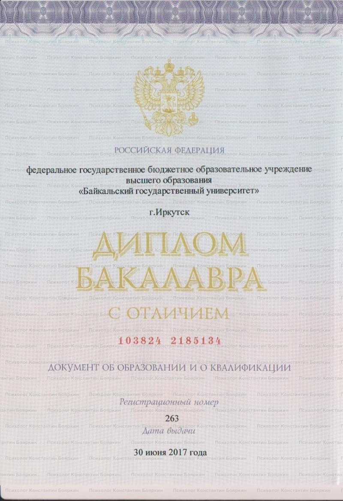
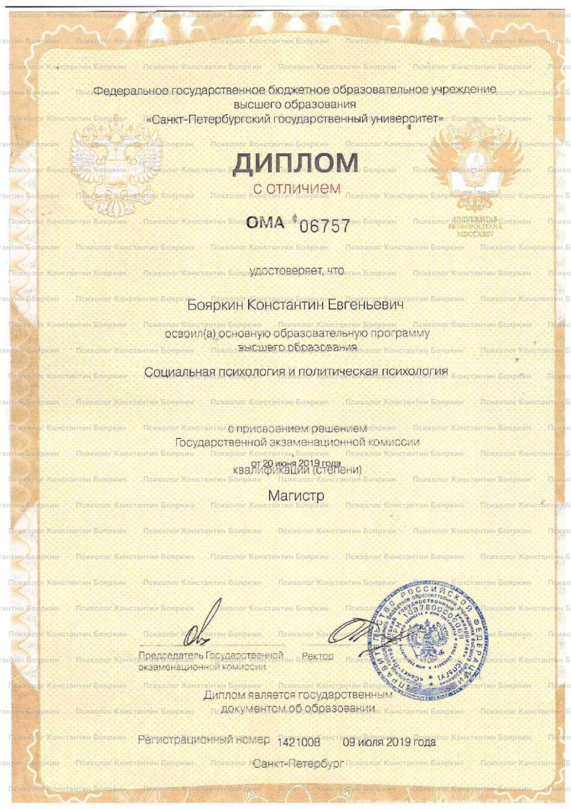
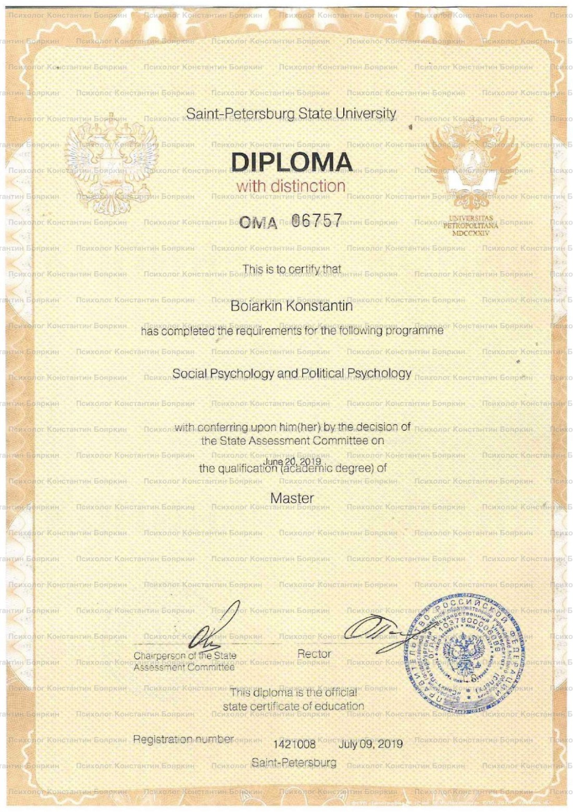
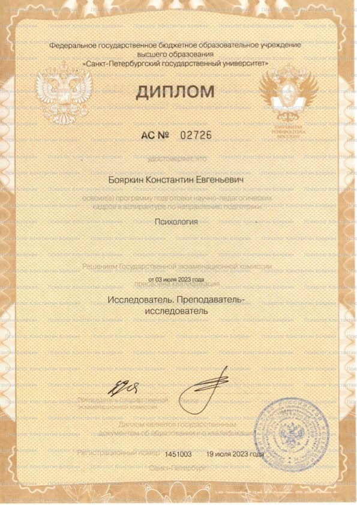
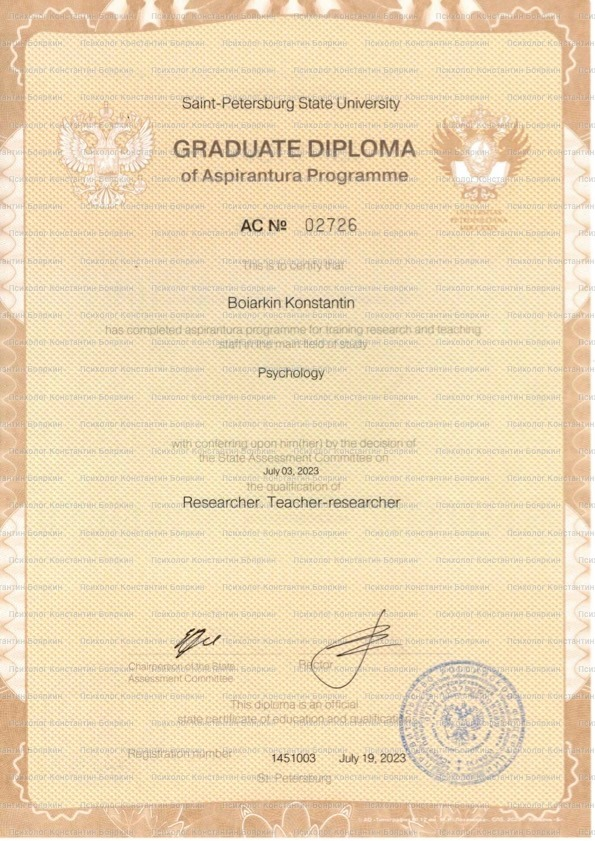
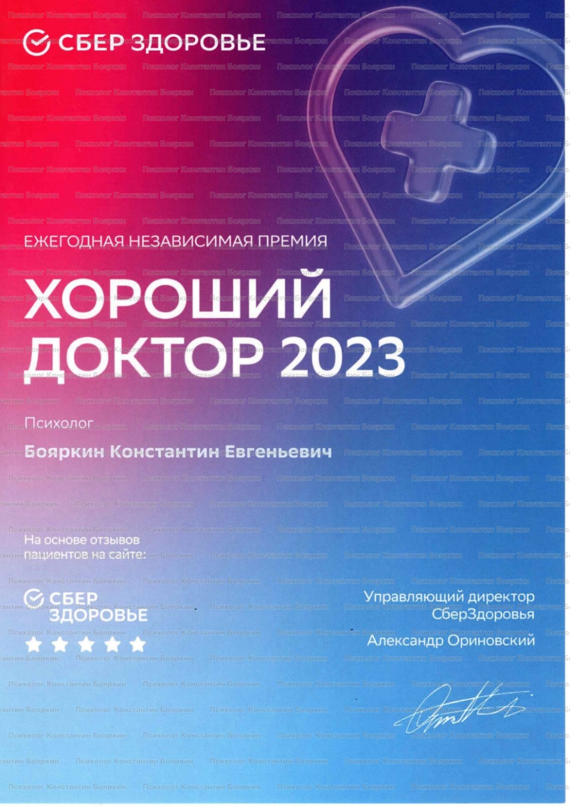

Психолог · КПТ · Санкт-Петербург и онлайн
Тревога, апатия, навязчивые мысли — с этим можно работать.
Моя задача — помочь вам разобраться в том, что происходит, и найти конкретные шаги к решению ваших проблем.
01 — Обо мне
Я работаю в когнитивно-поведенческом подходе — мы не просто говорим о проблеме, а разбираемся, как она устроена — и что с ней делать.
КПТ — один из самых исследованных методов психотерапии с доказанной эффективностью, рассчитанный на обозримое число встреч.
В основе КПТ — связь мыслей, эмоций и поведения: то, как мы интерпретируем происходящее, определяет, что мы чувствуем и делаем. На сессиях мы учимся замечать автоматические мысли, проверять их на соответствие реальности и постепенно менять привычные реакции — на уровне и мышления, и конкретных действий.
часов консультативной практики
с отличием по психологии
окончил аспирантуру Санкт-Петербургского государственного университета
автор научных публикаций в журналах Института психологии РАН и Высшей школы экономики
психолог года в Санкт-Петербурге — премия «Хороший доктор», СберЗдоровье
регулярно прохожу личную терапию, супервизии и интервизии
02 — С чем я работаю
С чем можно ко мне обратиться
Если вы не нашли свой запрос в списке — просто напишите, и мы вместе поймём, смогу ли я быть полезен.
03 — Форматы и стоимость
Онлайн — из любой точки мира. Очно — в Петербурге.
04 — Образование
Дипломы и награды
Нажмите на документ, чтобы рассмотреть его ближе.






05 — Отзывы
Что говорят клиенты
Отзывы с сервисов СберЗдоровье · DocDoc и b17
Прокручивайте блок вверх и вниз, чтобы листать отзывы
06 — Часто задаваемые вопросы
Что полезно знать до начала работы
Если вашего вопроса здесь нет — напишите мне, отвечу лично.
Как проходит первая консультация?
Мы знакомимся, и вы рассказываете, что вас беспокоит, — в том виде, в каком удобно. Я задаю вопросы, чтобы точнее понять ситуацию, и мы вместе формулируем запрос: что именно хочется изменить. В конце обсуждаем, как может выглядеть дальнейшая работа — формат, частоту встреч и первые шаги.
Что делать, если я никогда не был(а) у психолога?
Волноваться перед первой встречей — совершенно нормально. От вас не требуется ничего особенного: не нужно готовить «правильные» слова или разбираться в терминах. Говорите как говорится — я помогу вопросами и подскажу, с чего начать. Темп работы задаёте вы.
Нужно ли готовиться к первой встрече?
Специальной подготовки не нужно. Если хочется, подумайте заранее, что бы вы хотели изменить, — это может стать отправной точкой. Но если сформулировать сложно, это тоже нормально: разберёмся вместе на встрече.
Как понять, что вы мне подходите?
Обычно это становится ясно за одну-две встречи. Обратите внимание: комфортно ли вам говорить, чувствуете ли, что вас слышат и не осуждают, появляется ли больше ясности. Если поймёте, что вам нужен другой специалист, — скажите об этом прямо: это нормальная часть поиска, и я отнесусь к этому с пониманием.
Чем психолог отличается от психиатра и психотерапевта?
Психиатр — врач: он ставит диагнозы и назначает препараты. Психотерапевт в России — тоже врач с дополнительной подготовкой по психотерапии. Психолог работает разговорными методами и не занимается медикаментозным лечением. Эти форматы не исключают друг друга: работа с психологом может идти параллельно с наблюдением у врача, и при необходимости я порекомендую такую консультацию.
Как проходит парная консультация?
Это встреча на 85 минут, на которой присутствуют оба партнёра. Я сохраняю нейтральную позицию: не ищу виноватых и не встаю на чью-то сторону — мы разбираемся, как устроено ваше взаимодействие и что каждый может сделать, чтобы отношения стали лучше. При необходимости парную работу можно сочетать с индивидуальными встречами.
Можно ли переносить или отменять сессии?
Да. Если планы изменились, предупредите меня не позднее чем за 24 часа до встречи — перенесём без оплаты. При отмене менее чем за 24 часа сессия оплачивается полностью: это время было зарезервировано за вами.
С чем вы не работаете?
Я психолог, а не врач: не ставлю диагнозы, не назначаю и не отменяю препараты и лечение. Не работаю с детьми и подростками, с химическими зависимостями и с состояниями, которые требуют помощи психиатра. Также не выдаю справки и заключения. Если ваш случай из этого списка — всё равно напишите: подскажу, к какому специалисту обратиться.
07 — Запись
Сделать первый шаг бывает непросто. Но это проще, чем кажется.
Напишите мне — подберём удобное время. Перед началом вы сможете задать любые вопросы.
Конфиденциальность гарантирована